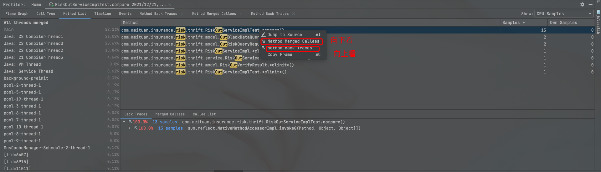

OOM 调查使用到的工具
JVM 性能诊断和 OOM 排查是 Java 工程师的核心技能之一。工具繁多，但核心思路只有一条：从宏观到微观，从现象到根因。操作系统工具看全局资源，JDK 命令行工具看 JVM 内部状态，Profiler 找热点方法，arthas 做精确定位——层层递进，最终锁定根因。
工具速查表
| 诊断场景 | 首选工具 | 备选工具 |
|---|---|---|
| 进程级 CPU/内存概览 | top -Hp <pid> |
htop、atop |
| JVM 内存分区使用率 | jstat -gcutil <pid> |
jcmd <pid> GC.heap_info |
| GC 行为分析 | jstat -gc <pid> 1000 |
GC 日志 + GCViewer |
| 线程堆栈快照 | jstack <pid> |
jcmd <pid> Thread.print |
| 堆转储 | jmap -dump:live,format=b,file=dump.hprof <pid> |
jcmd <pid> GC.heap_dump |
| Native Memory 追踪 | jcmd <pid> VM.native_memory |
gperftools |
| 启动参数确认 | jps -lvm / jinfo <pid> |
jcmd <pid> VM.flags |
| CPU 热点方法 | Async-Profiler 火焰图 | arthas profiler |
| 线上方法耗时定位 | arthas trace |
arthas monitor |
| 线上入参/返回值观察 | arthas watch |
arthas tt |
| 线上代码版本确认 | arthas jad |
arthas sc -d |
| 全维度 JVM 录制 | JFR + JMC | JConsole / JVisualVM |
操作系统级工具
操作系统工具提供的是 JVM 进程的"外部视角"——进程占了多少 CPU、多少内存、有多少线程。这是排查的第一步：先确认问题是否出在 JVM 进程上。
top / htop / atop
top 是最基础的进程监控工具，htop 提供更友好的交互界面，字节跳动开源的 atop 则能细致地监控线程信息并快速采集系统信息。
实战：用 top 按内存排序找到最耗内存的进程
1 | |
实战：用 top 查看 JVM 进程内的线程级 CPU 占用
1 | |
这一步的输出将在后续 jstack 分析中用到——找到 CPU 最高的线程 PID，转换为十六进制后在 jstack 输出中定位对应线程。
pmap
pmap 用于查看进程的内存映射。在非 root 权限下看到的是 JVM 启动参数，在 root/sudo 权限下看到的是完整的内存轮廓（各段内存的起止地址）。输出需要配合 HotSpot 的 Serviceability Agent API 才能解读各子线程的栈分布。
1 | |
ps_mem.py
ps_mem.py 是一个对 private RAM usage 分析不错的 Python 脚本，但需要 root 权限。
smem 与 /proc/pid/smaps
smem 对内存的 RSS（Resident Set Size）/ PSS（Proportional Set Size）/ USS（Unique Set Size）分析较好，但并不能帮助我们直接获知栈内存轮廓（比如当前 JVM 的 stack 到底是怎么分布的、占了多少内存），而且线上机器通常未安装。直接读取 /proc/pid/smaps 能获得同等信息，但需要 root 权限且输出较为冗长：
1 | |
关键认知：JVM 内存的 committed 与 reserved
通过 top 和 free 观察到的内存占用，与 JVM 实际使用的内存之间存在差异：
- reserved：JVM 通过
mmap(PROT_NONE)向操作系统预留的地址空间（初始值等于-Xmx），尚未实际分配物理内存 - committed：JVM 通过
mmap(PROT_READ | PROT_WRITE)实际申请的内存（初始值等于-Xms），已映射到物理页
实战中可以观察到：当 Young/Old 区的实际占用率很低时，top 和 free 显示的内存利用率也会相应降低——非 committed 的内存不算真正占用。因此，关注 utilization（利用率）比关注 used / capacity 的绝对值更有意义。
JDK 内置命令行工具
JDK 自带的命令行工具是 JVM 诊断的核心武器库。相比 GUI 工具，它们能在任何 Linux 服务器上直接使用，是线上排查的第一选择。
jps：查找 Java 进程
1 | |
jinfo：查看和修改 JVM 参数
1 | |
jstat：GC 和内存统计
jstat 直接读取 JVM 内部的性能计数器（PerfData），比直接读 GC 日志更直观。即使没有开启 -XX:+PrintGCDetails，JVM 也会在内部写一个类似日志的东西，把所有的 GC 记下来——jstat 读的就是这个内部数据。同理，JMX 客户端也可以看到这些值。
实战：监控 GC 行为
1 | |
实战：监控各区利用率
1 | |
各列含义：S0/S1 = Survivor 区利用率，E = Eden 区，O = Old 区，M = Metaspace，YGC/FGC = Young/Full GC 次数，YGCT/FGCT = 累计耗时。
关键认知：DirectByteBuffer 和 Metaspace 的回收严重依赖 Full GC，Young GC 远远不够。如果观察到 Metaspace 持续增长但 FGC 次数为 0，需要警惕 Metaspace 泄漏。
jstack：线程堆栈快照
jstack 是线程级问题排查的核心工具，能输出所有线程的完整堆栈，并自动检测死锁。jstack 还可以用来分析 core dump（jmap 也可以）。注意线上有时候 jstack 会用不了（权限或 attach 机制问题）。
实战：定位 CPU 最高的线程
这是一个经典的三步排查法：
1 | |
jstack 输出格式解读：
1 | |
- tid：JVM 内部的线程内存地址
- nid：操作系统的线程 PID 的十六进制形式（与
top -Hp输出对应）
死锁检测：如果存在死锁，jstack 输出的开头和末尾都会打印死锁信息，无需额外分析工具。
jmap：堆内存分析
1 | |
注意：Heap Dump 的耗时包括 Full GC 时间和写磁盘时间。对于大堆（>8GB），STW 可能持续数十秒甚至分钟级，hang/panic 几乎不可避免。建议在摘流后的机器上执行。
jcmd：统一诊断命令
jcmd 是 JDK 7+ 引入的统一诊断工具，能替代 jps、jstack、jmap 的大部分功能，且支持更多高级特性（如 NMT、JFR）。Oracle 官方推荐使用 jcmd 替代其他独立工具。
常用命令速查：
1 | |
实战：使用 NMT 追踪 Native Memory
Native Memory Tracking（NMT）是 Java 8 自带的功能，能追踪 JVM 内部各子系统的内存使用。需要在启动时添加参数 -XX:NativeMemoryTracking=detail。
1 | |
NMT 能看到线程消耗的内存，但看不到 DirectByteBuffer。JMC 正好反过来——能直接看到 DirectByteBuffer，但看不到线程内存。两者结合使用效果最佳。
查看启动参数的多种方式
1 | |
诊断思维：因果关系分析
面对 GC 耗时增大、线程 Block 增多、慢查询增多、CPU 负载高这四个常见表象时，关键在于理清因果链条和时间线顺序——到底哪个是诱因？
评价系统性能的核心挑战在于建立正确的 Metric 体系：选择什么指标来衡量当前系统的健康状况，比具体的调优手段更重要。
GUI 客户端与 JFR
GUI 工具提供了比命令行更直观的可视化界面，适合本地开发环境或通过 JMX 远程连接进行分析。但在生产环境中，由于网络隔离和安全限制，JConsole/JVisualVM/JMC 通常全部连不上线上——这是实际使用中最大的限制。
JConsole
JDK 自带的 JMX 客户端，MBean 功能比 JVisualVM 更强大。适合查看 MBean 属性、调用 MBean 操作（需要在界面上对"函数名"浮层按钮进行点击调用）。也可以在 JMC 上打开 MBeanServer 的控制台，在诊断命令面板里点击 GC.class_stats 等高危命令。
JVisualVM
从 Java 9 开始不再随 JDK 分发，需要到官方主页单独下载。命令行中 jvisualvm 等同于 visualvm。提供线程、内存、CPU 的实时监控和采样分析。
JMC（Java Mission Control）
从 JDK 9 开始不再随 JDK 分发，需要到 GitHub 单独下载。版本兼容性：JMC 8.0 支持 Java 8，JMC 8.1+ 需要 Java 11。
安装方式：
1 | |
如果 JMC 启动失败，可能是包的问题，也可能需要命令行启动。如果要指定 JVM，可以参考 Azul Mission Control 安装文档 和 JDK Mission Control 8 安装指南。
JMC 能直接看到 DirectByteBuffer 的使用情况，这一点比 NMT 更优秀（NMT 看不到 DirectByteBuffer，但能看到线程内存）。
JDK Flight Recorder（JFR）
JFR 是 JVM 内置的低开销事件录制引擎，是目前最完备的 JVM 运行时状态分析工具。在 JDK 11 之前，JFR 是 Oracle JDK 的商业特性；从 JDK 11 开始，Oracle 将其开源并集成到 OpenJDK 中，所有发行版免费可用。
核心特性：
- 低开销：生产环境性能开销通常小于 1%
- 事件驱动：基于事件的记录机制，可配置记录哪些事件
- 持续录制：支持长时间持续录制，适合生产环境监控
- 详细诊断：记录 JVM 内部事件（GC、类加载、编译、线程等）和自定义事件
实战：启动时启用 JFR
1 | |
常用参数：duration（录制时长）、filename（输出路径）、dumponexit（JVM 退出时自动 dump）、maxsize（最大文件大小）、maxage（保留时间）。
实战：运行时通过 jcmd 控制 JFR
1 | |
JFR 配置模板：
default.jfc：默认配置，平衡性能和详细信息profile.jfc：性能分析配置，记录更多事件
1 | |
JFR 事件类型：
| 类别 | 事件 |
|---|---|
| CPU | CPU Load、Method Profiling、Native Method Sample |
| 内存 | Allocation in new TLAB、Allocation outside TLAB、Object Count |
| GC | GC Phase、Heap Summary、GC Configuration |
| 线程 | Thread Start/End、Thread Park/Sleep |
| I/O | File Read/Write、Socket Read/Write |
| JVM 内部 | Class Loading、Compilation、Code Sweeping |
在 JMC 中分析 JFR：打开 JMC → 连接目标 JVM 或打开 .jfr 文件 → 浏览事件类型 → 使用 Flame Graph 查看热点 → 分析内存分配和 GC 行为 → 查看线程状态和锁争用。
Profiler 原理与实战
本节内容主要参考美团技术团队的《JVM CPU Profiler 技术原理及源码深度解析》。
常见 Profiler 工具
| 工具 | 类型 | 特点 |
|---|---|---|
| JProfiler | 商用 | “The Award-Winning All-in-One Java Profiler”，功能最全面 |
| Uber JVM-Profiler | 开源 | 支持 CPU、Memory、I/O 多维度采集，支持 Kafka 上报 |
| IntelliJ 内置 Profiler | 免费 | 基于 Async-Profiler 的包装 |
| Async-Profiler | 开源 | 低开销、无 SafePoint Bias，社区首选 |
| 更多 Profiler | - | jvm-profiling-tools 组织维护的完整列表 |
Sampling vs Instrumentation
CPU Profiler 的两种实现手段，本质区别在于：基于定时采样 dump，还是基于 AOP 拦截？
Sampling（采样）：
- 启动采样定时器，以固定频率（毫秒级）对所有线程的调用栈进行 Dump
- 汇总统计每个方法被采样到的次数及调用关系
- 导出统计结果
Instrumentation（插桩）：
利用 Instrument API 对所有必要的 Class 进行字节码增强，在方法入口埋点、出口统计耗时，最终汇总。本质上是一种 AOP。
对比：
| 维度 | Sampling | Instrumentation |
|---|---|---|
| 侵入性 | 低 | 高（字节码增强） |
| 性能开销 | 低 | 高（每个方法都有额外开销） |
| 数据精度 | 近似（取决于采样率） | 精确（但包含探针自身的时间加成） |
| 适用场景 | CPU 密集型、线上服务 | I/O 密集型、对精度要求高的场景 |
社区的 Profiler 更多基于 Sampling 实现。Sampling 适合线上服务，Instrumentation 适合离线分析。有一篇著名的文章《Why (Most) Sampling Java Profilers Are Fucking Terrible》深入讨论了这个问题。
基于 Java Agent + JMX 的 Sampling 实现
一个最简单的 Sampling CPU Profiler 可以用 Java Agent + JMX 方式来实现：以 Java Agent 为入口，进入目标 JVM 进程后开启一个 ScheduledExecutorService，定时利用 JMX 的 threadMXBean.dumpAllThreads() 来导出所有线程的 StackTrace，最终汇总并导出。
Uber 的 JVM-Profiler 实现原理也是如此，关键部分代码如下：
1 | |
Uber 提供的定时器默认 Interval 是 100ms，对于 CPU Profiler 来说略显粗糙。但由于 dumpAllThreads() 的执行开销不容小觑，Interval 不宜设置得过小，所以该方法的 CPU Profiling 结果会存在不小的误差。JVM-Profiler 的优点在于支持多种指标的 Profiling（StackTrace、CPUBusy、Memory、I/O、Method），且支持将 Profiling 结果通过 Kafka 上报回中心 Server 进行分析，也即支持集群诊断。
对于 Monitoring 服务而言，大停顿的操作都要小心、小心再小心。
使用 Java 实现 Profiler 相对较简单，但也存在一些问题——Java Agent 代码与业务代码共享 AppClassLoader，被 JVM 直接加载的 agent.jar 如果引入了第三方依赖，可能会对业务 Class 造成污染。截止发稿时，JVM-Profiler 都存在这个问题，它引入了 Kafka-Client、http-Client、Jackson 等组件，如果与业务代码中的组件版本发生冲突，可能会引发未知错误。Greys/Arthas/JVM-Sandbox 的解决方式是分离入口与核心代码，使用定制的 ClassLoader 加载核心代码，避免影响业务代码。
SafePoint Bias 问题
基于 Sampling 的 CPU Profiler 必须遵循两个原则：样本足够多，且所有代码点被采样的概率相同。
传统的 JMX threadMXBean.dumpAllThreads() 和 JVMTI GetStackTrace() 都只能在安全点（SafePoint）采样，违背了第二条原则——某些代码可能永远没有机会被采样，即使它消耗了大量 CPU 时间。这种现象称为 SafePoint Bias。
具体而言，GetStackTrace() 获取其他线程的调用栈时，必须等待目标线程进入安全点，且不能在 UNIX 信号处理器中被异步调用。更多细节参考《Safepoints: Meaning, Side Effects and Overheads》。
AsyncGetCallTrace：突破 SafePoint 限制
解决方案是使用 HotSpot 内部的 AsyncGetCallTrace 函数——它不受安全点干扰，且支持在 UNIX 信号处理器中被异步调用。
实现思路：注册一个 UNIX 信号处理器，在 Handler 中调用 AsyncGetCallTrace 获取当前线程的调用栈。由于 UNIX 信号会被随机分发给进程的某个线程，最终信号会均匀分布在所有线程上，从而均匀获取所有线程的调用栈样本。
在 Linux 环境下结合 perf_events 还能同时采样 Java 栈与 Native 栈。典型开源实现有 Async-Profiler 和 Honest-Profiler。IntelliJ IDEA 内置的 Java Profiler 就是 Async-Profiler 的包装。
火焰图
火焰图是 Profiler 采样结果的可视化形式：
- X 轴：采样总量（越宽 = 占用 CPU 时间越多）
- Y 轴：栈深度（底部是入口方法，顶部是叶子方法）
- 每个框：一个栈帧，宽度代表该方法占用的 CPU 总时间
阅读要点：找宽平顶——X 轴宽表示耗时多，顶部平表示该方法自身（而非子调用）消耗 CPU 多。宽平顶就是性能热点。
生成火焰图：
FlameGraph 项目的核心是一个 Perl 脚本，输入格式为：
1 | |
1 | |

火焰图帧颜色编码与 JIT 编译层级
async-profiler 生成的火焰图通过颜色区分不同类型的栈帧，这些颜色编码是诊断 JIT 编译问题的关键线索：
| 颜色 | 标签 | 含义 |
|---|---|---|
深绿 #50e150 |
Java compiled | C2 编译的代码（最高优化级别，Server Compiler） |
浅绿 #cce880 |
Java compiled by C1 | C1 编译的代码（中间优化级别，Client Compiler） |
淡绿 #b2e1b2 |
Interpreted | 解释执行的代码（未编译） |
青色 #50cccc |
Inlined | 被 JIT 内联的方法 |
黄色 #c8c83c |
C++ (VM) | HotSpot VM 内部 C++ 代码 |
红色 #e15a5a |
Native | JNI / .so 库调用 |
橙色 #e17d00 |
Kernel | 内核态代码 |
注意 Java compiled（深绿）并没有标注 “C2”——这是因为 C2 是 HotSpot 的默认最终编译器，async-profiler 将其视为"正常的已编译代码"。只有 C1 编译的代码才被特别标注。
实战：通过火焰图诊断 JIT Deoptimization Storm
在一次线上 SpEL 表达式求值的偶发性能退化排查中，我们通过对比正常时和 CPU 偏高时的两份 async-profiler 火焰图，发现了 JIT 去优化风暴（Deoptimization Storm）的直接证据。
正常火焰图的基线数据：
| 指标 | 值 |
|---|---|
| 唯一函数名 | 462 |
| 总帧数 | 815 |
| 最大调用深度 | 220 层 |
| Interpreted 帧 | 5 |
| C1 帧 | 5 |
CPU 偏高火焰图的异常数据：
| 指标 | 值 | 与正常对比 |
|---|---|---|
| 唯一函数名 | 1207 | 2.6 倍 |
| 总帧数 | 2533 | 3.1 倍 |
| 最大调用深度 | 297 层 | +35% |
| Interpreted 帧 | 57 | 11.4 倍暴增 |
| C1 帧 | 235 | 47 倍暴增 |
三重证据链：
- Interpreted 帧 11.4 倍暴增：大量方法从 C2 编译态退化回解释执行，说明 JIT 编译器将这些方法标记为
not entrant（不可进入），触发了去优化 - C1 帧 47 倍暴增：方法被去优化后重新进入分层编译流程（Interpreted → C1 → C2），大量方法卡在 C1 这个"半优化"的中间状态
- JIT 编译器函数现身：CPU 偏高火焰图中出现了
invoke_compiler_on_method、submit_compile、Broker::compile_method等 JIT 编译器内部函数——正常火焰图中完全没有这些帧，说明 JIT 编译器正在疯狂重新编译被去优化的方法
JIT 分层编译的退化路径：
1 | |
这就是为什么 CPU 高但吞吐量低——代码在用"半优化"的 C1 版本运行，而不是"全优化"的 C2 版本。每个方法的执行效率可能只有 C2 优化后的 1/5 到 1/10，叠加上 JIT 编译器自身消耗的 CPU，整体表现为 CPU 飙高但业务处理能力骤降。
诊断要点总结：
- 对比两份火焰图时，优先看帧类型的比例变化，而不仅仅是看哪个方法宽。Interpreted 和 C1 帧的暴增是 JIT 去优化的直接信号
- 关注 JIT 编译器自身的栈帧：
CompileBroker、C1_CompilerThread、C2_CompilerThread相关帧在正常火焰图中几乎不可见，一旦大量出现说明编译器正在加班 - 注意 RASP / APM Agent 的帧：安全 Agent（如 RASP）和 APM Agent（如 ATP）通过字节码增强可能打破 JIT 的类型假设（Class Hierarchy Analysis），间接触发去优化。在 CPU 偏高火焰图中如果出现了正常时没有的 Agent 帧，值得深入排查
热点分析树与调用堆栈树
热点分析树（自底向上）：统计 CPU 上调用最频繁的方法，树形结构展示抵达热点的不同栈路径。常见热点方法包括日志调用、协议编解码、加解密、各种客户端 flushBuffer。需要注意的是，日志虽然调用频繁，但未必是真正的性能热点——就像字符串在 Heap Dump 中出现最多，但未必是内存问题的根因。
调用堆栈树（自顶向下）：从入口方法开始，展示各子调用的耗时占比。常见的底层堆栈包括 Thread.run、ThreadPoolExecutor$Worker.run、各种 I/O 事件 Handler、Future.get 等。
Java Agent 与 Dynamic Attach
Java Agent 基于 JVMTI 机制与 JVM 通信，是 Debugger（JDWP）、Profiler、Monitor、Thread Analyser 等工具的统一基础。
Java Agent 规范：在 MANIFEST.MF 中指定 Premain-Class，实现 premain 方法：
1 | |
依赖隔离问题：Java Agent 代码与业务代码共享 AppClassLoader，如果 Agent 引入了第三方依赖（如 Kafka-Client、Jackson），可能与业务代码的组件版本冲突。Arthas/JVM-Sandbox 的解决方式是分离入口与核心代码，使用定制的 ClassLoader 加载核心代码。
Dynamic Attach：JDK 1.6+ 提供 Attach API，允许向运行中的 JVM 进程添加 Agent。arthas 的核心实现：
1 | |
Async-Profiler 的 jattach 方式：
1 | |
Profiler 核心结论
- Java Agent 的 Dynamic Attach 是否易用，决定了基于它构建的工具能否被广泛使用
- Instrumentation 不适合做定量分析，性能影响可能非常大
- 很多 JMX API 会 block until SafePoint（如
GetStackTrace），SafePoint Bias 是客观存在的问题 - Sampling 才是对业务友好的采集方式，精确度需要通过 AsyncGetCallTrace 等手段迂回解决
arthas 实战
arthas 是阿里开源的 Java 诊断利器，基于 Java Agent + Dynamic Attach 实现，能在不重启 JVM 的情况下完成方法级的精确诊断。
1 | |
以下按诊断场景组织——每个案例从"遇到了什么问题"开始，一步步展示排查过程。
案例一：线上接口突然变慢，如何定位根因？
场景：某服务 RT 突然飙升，P99 从 200ms 涨到 5s+，监控告警但不知道慢在哪一层。
核心思路：漏斗式排查——先宏观找到最慢的入口，再逐层下钻到具体子调用，最后精确确认根因。三种方法互补。
方法一：trace 递归下钻法（最常用）
trace 只展开一层子调用的耗时。从最外层入口开始，每次找到耗时最大的子调用，再对它执行 trace，如此递归直到叶子方法。
第一步：从入口开始 trace
1 | |
1 | |
第二步：对瓶颈方法继续 trace
1 | |
1 | |
第三步：递归到叶子
1 | |
1 | |
trace 关键技巧：
| 技巧 | 命令 | 说明 |
|---|---|---|
| 按耗时过滤 | '#cost > 2000' |
过滤正常流量噪音 |
| 限制抓取次数 | -n 5 |
避免长时间挂载影响性能 |
| 包含 JDK 方法 | --skipJDKMethod false |
怀疑 JDK 层面问题时打开 |
| 正则多类匹配 | trace -E com.example.service\|com.example.repository .* |
一次 trace 多层 |
| 排除干扰类 | --exclude-class-pattern com.example.log.* |
排除日志等 |
trace 的原理是对匹配到的类做字节码增强，匹配范围越大性能开销越大。线上务必用
-n限制次数，用完执行reset还原增强。
方法二：watch 精确确认法
trace 告诉"哪里慢"，watch 告诉"为什么慢"——观察方法的入参、返回值、异常。
1 | |
1 | |
watch 常用表达式速查：
1 | |
方法三：profiler 火焰图法（全局视角）
trace 和 watch 是"点"上的工具，profiler 是"面"上的工具——对整个 JVM 采样，不需要预先知道哪里慢。
1 | |
三种方法对比
| 维度 | trace 递归下钻 | watch 精确确认 | profiler 火焰图 |
|---|---|---|---|
| 适用场景 | 已知慢在某个入口，逐层定位 | 已知慢在某个方法，确认原因 | 完全不知道慢在哪里 |
| 信息类型 | 调用链 + 各层耗时 | 入参 / 返回值 / 异常 | 全局 CPU / 内存 / 锁热点 |
| 性能开销 | 中等（字节码增强） | 低（单方法增强） | 低（采样，约 1-5%） |
| 使用顺序 | 第一步：定位哪个方法慢 | 第二步：确认为什么慢 | 第零步：不知道从哪开始 |
推荐排查流程：profiler 火焰图（全局扫描）→ trace 递归下钻（逐层定位）→ watch 精确确认（确认根因）→ jad 确认代码（确认线上版本）。
案例二：线程 CPU 飙高 / 死锁 / 线程池打满
场景：监控显示 CPU 使用率 100%，或请求全部超时，怀疑死循环、死锁或线程池打满。
CPU 飙高——找到最忙的线程
1 | |
1 | |
结论：正则表达式回溯导致 CPU 飙高（经典 ReDoS 问题），定位到 HtmlSanitizer.sanitize()。
死锁——一键检测
1 | |
1 | |
其他线程诊断命令
1 | |
反向查调用栈：stack 命令
知道某个方法被调用了，但不知道从哪个入口调进来的：
1 | |
stack vs trace：trace 是"从上往下看"——展开子调用；stack 是"从下往上看"——打印调用者链。
案例三：偶发问题难以复现，如何录制现场？
场景：某接口偶尔返回错误结果，用 watch 守了半天没抓到，因为出现频率太低。
tt（TimeTunnel，时空隧道）能录制方法调用的完整现场（入参、返回值、异常、耗时），支持事后回放。
开启录制
1 | |
1 | |
事后查看异常调用
1 | |
tt 能做什么与不能做什么
| 能力 | 说明 |
|---|---|
| ✅ 录制方法调用的完整现场 | 入参、返回值、异常、耗时、线程信息 |
| ✅ 事后反复查看任意一次调用 | 不需要像 watch 一样实时盯着 |
| ✅ 按条件搜索历史记录 | 按耗时、是否异常等条件过滤 |
| ✅ 对录制的对象做 OGNL 求值 | 事后分析入参/返回值的任意属性 |
| ✅ 重放历史调用 | 用原始入参重新触发一次方法调用 |
| ❌ 不能录制子调用 | 只录制你指定的那一个方法，不会展开子调用链（用 trace 看子调用） |
| ❌ 不能修改入参后重放 | 重放使用的是录制时的原始入参（用 ognl 直接调用方法传自定义参数） |
| ❌ 录制有内存开销 | 入参和返回值的引用会被持有，大对象会占用堆内存（用 -n 限制次数，及时 tt --delete-all 清理） |
| ❌ 重放有副作用 | 重放会真实执行方法逻辑，写 DB、发 MQ 的方法重放会产生真实副作用（仅对只读方法使用 -p） |
| ❌ 不能跨 JVM 重放 | 录制现场只在当前 JVM 内存中，arthas 退出后丢失 |
| ❌ 不能录制构造方法 | 不支持 <init> 和 <clinit>（用 watch 观察构造方法） |
tt vs watch 选择
| 维度 | tt | watch |
|---|---|---|
| 核心差异 | 录制并存储，事后可反复查看和重放 | 实时输出，看完即丢 |
| 适合场景 | 偶发问题（录下来慢慢分析）、需要重放验证 | 高频问题（实时观察即可）、只需看一次 |
| 内存开销 | 较大（持有对象引用） | 几乎无（输出后即释放） |
| 使用建议 | 问题难以复现时优先用 tt 录制 | 问题容易复现时优先用 watch |
案例四：线上代码不对 / 发布没生效 / 依赖版本错了
场景：确信代码已修复并发布，但线上行为还是老样子。或怀疑线上加载的二方包版本不对。
确认线上代码版本
1 | |
对比 jad 输出和本地 IDE 中的源码，确认关键逻辑是否一致。反编译的代码在语法糖（lambda、try-with-resources 等）上会与原始源码有差异，只需关注业务逻辑。
确认二方包版本
1 | |
多 ClassLoader 环境下的类冲突
在 OSGI、Pandora Boot 等多 ClassLoader 环境中，同一个类可能被不同的 ClassLoader 加载了不同版本：
1 | |
导出到文件做 diff
1 | |
紧急热修复（jad + mc + redefine）
1 | |
redefine 有诸多限制——不能增删方法/字段、不能修改方法签名、不能修改继承关系。且 redefine 后的类在下次 Full GC 或类重新加载时可能被还原。仅作为临时应急手段。
jad 能做什么与不能做什么
| 能力 | 说明 |
|---|---|
| ✅ 反编译任意已加载的类 | 包括你自己的代码、二方包、三方包、甚至 JDK 的类 |
| ✅ 显示 ClassLoader 和 jar 路径 | 直接确认类来自哪个 jar 包 |
| ✅ 指定 ClassLoader 反编译 | 解决多 ClassLoader 下同名类冲突 |
| ✅ 只反编译单个方法 | 大类只看关键方法，输出更精简 |
| ✅ 导出到文件做 diff | 对比线上代码和本地代码的差异 |
| ❌ 不能看到注释 | 编译后注释已丢失，反编译无法恢复 |
| ❌ 不能看到原始变量名 | 如果编译时没有保留调试信息（-g），变量名会变成 var1、var2 |
| ❌ 语法糖会被还原 | lambda → 匿名内部类，for-each → iterator，switch-string → hashCode 判断 |
| ❌ 不能反编译 native 方法的实现 | native 方法的实现在 C/C++ 层，jad 只能看到方法签名 |
案例五：JVM 整体状态一览
场景：刚登上一台线上机器，需要快速了解 JVM 的整体健康状况。
1 | |
heapdump 会导致 STW，大堆可能暂停数十秒甚至分钟级。优先在摘流后的机器上执行。
案例六：运行时动态操作
场景：不重启 JVM，动态调用方法、查看对象状态、搜索类信息。
ognl：动态执行表达式
1 | |
vmtool：获取 JVM 中的活对象
1 | |
sc / sm：搜索类和方法
1 | |
classloader：排查类加载问题
1 | |
dump：导出已加载类的字节码
1 | |
案例七：排查 multipart 请求导致的 OOM
场景：HTTP 请求中包含特殊构造的 multipart 文件名（如以 2\ 结尾），框架将文件的二进制内容误作为字符串参数写入 parameterMap，导致序列化时触发 java.lang.OutOfMemoryError: Java heap space。
用 trace 定位耗时分布：
1 | |
1 | |
getParameterMap() 耗时 29%，JsonUtil.toJsonStr() 耗时 70% 并最终抛出 OOM。
用 watch 确认超大参数：
1 | |
1 | |
parameterMap 中存在超出大小限制的超大字符串，从而定位到根因。
arthas 安全退出
1 | |
线上铁律：用完 arthas 一定要
stop，不要让 arthas 进程长期挂在线上 JVM 上。
BTrace：动态追踪工具
BTrace 是一个安全的、动态的 Java 追踪工具，基于 Java Agent 和 JVMTI 技术，通过字节码增强在运行时修改目标类的字节码，无需重启 JVM。
核心特点：
- 安全性：限制可用的 Java API，禁止创建对象、抛出异常、循环等可能导致 JVM 不稳定的操作
- 低侵入性：追踪代码在目标 JVM 中执行，不影响业务逻辑
- 动态性：运行时动态加载和卸载追踪脚本
安装与基本命令：
1 | |
示例：追踪方法执行时间
1 | |
示例：追踪方法参数和返回值
1 | |
示例：定时统计方法调用次数
1 | |
示例：追踪异常
1 | |
示例：追踪内存分配
1 | |
注意事项：BTrace 脚本中只能使用 BTraceUtils 提供的静态方法，禁止创建新对象、修改字段值、抛出异常。避免在频繁调用的方法上使用，生产环境使用前务必在测试环境验证。BTrace 2.x 版本支持更多 Java 特性。
在 arthas 出现后，BTrace 的大部分使用场景已被 arthas 的
trace、watch、monitor等命令覆盖，且 arthas 的使用门槛更低。BTrace 的优势在于脚本的灵活性——可以编写任意复杂的追踪逻辑。
gperftools：Native Memory 排查
gperftools 是 Google 开发的性能分析工具集，在 JVM native memory leak 排查场景中，主要使用其 tcmalloc（Thread-Caching Malloc）内存分配器的 Heap Profiler 功能。
安装：
1 | |
启用 Heap Profiler：
1 | |
主要环境变量：
| 变量 | 说明 |
|---|---|
LD_PRELOAD |
预加载 gperftools 库 |
HEAPPROFILE |
heap profile 文件输出路径前缀 |
HEAP_PROFILE_ALLOCATION_INTERVAL |
每分配指定字节数输出一次 profile（默认 1GB） |
HEAP_PROFILE_INUSE_INTERVAL |
当 inuse 内存达到指定字节数时输出 |
HEAP_PROFILE_TIME_INTERVAL |
每隔指定秒数输出一次 |
分析 Native Memory：
1 | |
适用场景：DirectByteBuffer 导致的 native memory 泄漏、JNI 调用中 native code 的内存泄漏、第三方 native 库（如 Netty native transport）的内存问题、NIO 相关的堆外内存泄漏。
注意事项：gperftools 只能追踪通过 malloc/free 分配的内存，无法追踪 JVM 内部直接通过 mmap 分配的内存。在高并发场景下有约 5%-10% 的性能开销。与 JVM 的 NMT 结合使用效果更佳。
Remote Debugger
Remote Debugger 基于 JDWP（Java Debug Wire Protocol）协议，允许 IDE 连接到远程 JVM 进程进行断点调试。
常见问题：为什么有时候 Remote Debugger 连接被拒绝（Connection Refused）？因为上一个 debugging session 还在继续，JDWP 端口已被占用，再 debug 上去会被拒绝。需要先断开上一个 session。
参考资料
JVM 内存与 GC
- 聊聊 JVM 的 -XX:MaxDirectMemorySize
- PermGen and Metaspace
- Native Memory Tracking in JVM
- JVM 源码分析之堆外内存完全解读
- JVM Anatomy Quark #12: Native Memory Tracking
- 聊聊 HotSpot VM 的 Native Memory Tracking
- NMT 工具输出表
- Java 程序在 Linux 上运行虚拟内存耗用很大
- native-mem-tracking.md
- 说说在 Java 启动参数上我犯的错
- 江南白衣 | 关键系统的 JVM 参数推荐（2018 仲夏版）
- Metaspace 整体介绍（永久代被替换原因、元空间特点、元空间内存查看分析方法）
线程与调试
- 线程栈的原理
- HotSpot thread.cpp 源码
- RocketMQ 的 JVM 配置
- gdb：注意
backtrace的使用 - vmerr：注意看 JVM 退出时的线程栈状态，C++ 栈帧的调用来源和抛出位置
DirectByteBuffer 与 GC
- System.gc() 和 -XX:+DisableExplicitGC 启动参数，以及 DirectByteBuffer 的内存释放
- Impact of setting -XX:+DisableExplicitGC when NIO direct buffers are used
JVM Crash 分析